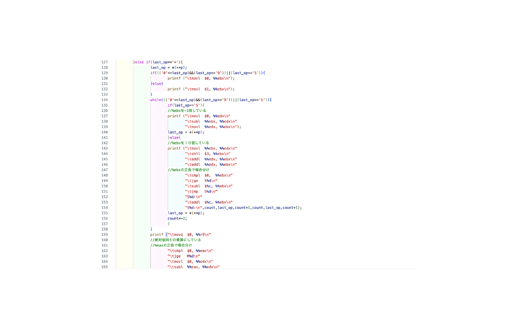

このプロジェクトは、大学のアセンブリ言語の授業で実施した電卓コンパイラの実装課題です。2024年に、x86-64アセンブリ言語を使用して電卓コンパイラの実装に取り組みました。
プロジェクト名
電卓コンパイラ：calc1.c、calc2.c、calc3.cの実装
実施時期
2024年
目的・概要
本プロジェクトの目的は、x86-64アセンブリ言語を使用して電卓コンパイラを実装することです。以下の3つのバージョンを段階的に実装しました：
- calc1.c：基本的な四則演算とメモリ機能を実装
- calc2.c：オーバーフローと0除算のチェック機能を追加
- calc3.c：imulやidiv命令を使用せずに乗算・除算を実装
使用技術・ツール
x86-64アセンブリ言語を使用し、主に以下の技術を活用しました：
- レジスタ操作（%eax, %ebx, %ecx, %edx, %r8-%r13）
- 算術演算命令（add, sub, imul, idiv）
- ビット演算命令（shl, shr, rcr）
- 条件分岐命令（cmp, jmp）
実装の工夫点
1. 効率的なレジスタ使用
- %eax：計算結果の保持
- %ebx：入力中の数値の保持
- %ecx：メモリ機能の値の保持
- その他のレジスタ：乗算・除算の実装に使用
2. 符号キーの実装
- 数値入力時の符号反転機能
- 正負の判定と適切な演算の選択
3. 連続演算への対応
- 演算子の優先順位の考慮
- 中間結果の適切な保持
4. エラー処理
- オーバーフローの検出と処理
- 0除算の検出と処理
課題と改善点
プロジェクトを通じて以下の課題と改善点を特定しました：
- calc3.cでの乗算・除算の余分なループ処理の最適化
- より効率的なレジスタ使用の検討
- エラー処理の強化
- テストケースの拡充
制作過程
まず、基本的な四則演算とメモリ機能を実装したcalc1.cを作成しました。次に、オーバーフローと0除算のチェック機能を追加したcalc2.cを実装。最後に、imulやidiv命令を使用せずに乗算・除算を実装したcalc3.cを作成しました。
特にcalc3.cの実装では、乗算と除算を基本的な命令のみで実装する必要があり、ビット演算を活用した効率的な実装方法を検討しました。また、符号の処理やオーバーフローの検出など、様々なエッジケースへの対応も実装しました。